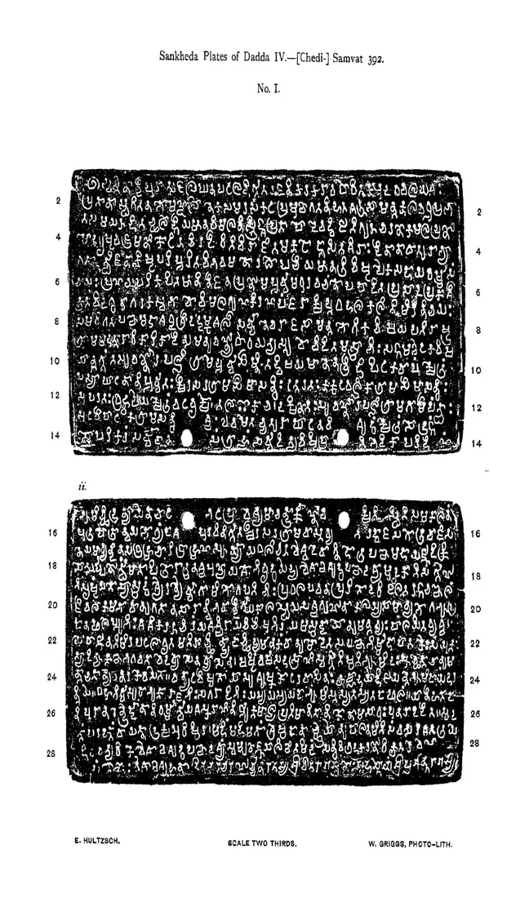
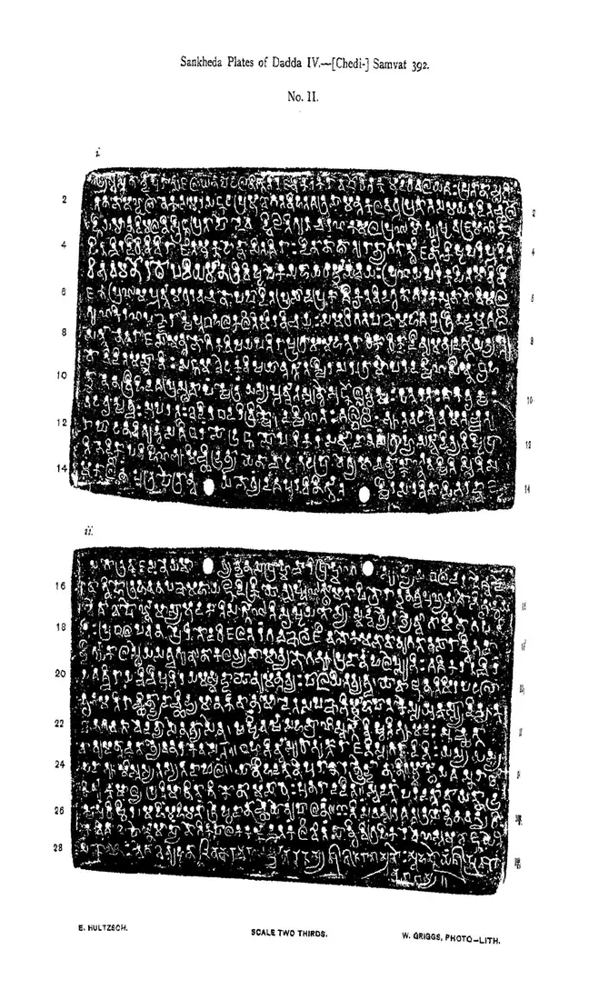

Two grants of Dadda IV. Praśāntarāga; [Chēdi-]Samvat 392
No. 5.—TWO GRANTS OF DADDA IV. PRASANTARAGA ;
[OHEDI-]SAMVAT 392.
[OHEDI-]SAMVAT 392.
By G. BÜHLER, PH.D., LL.D., C.I.E.
I here re-edit the two inscriptions of the Gurjara chief Dadda IV.,7 which were discovered in 1895 by Mr. Vithal Nagar of Baroda.8 At my request, Dr. Hultzsch obtained the originals from the owner, Dhed Narayan of Satikhêdâ in the Baroda division, through the kind offices of Colonel N. C. Martelli, Agent to the Governor-General at Baroda. Dr. Hultzsch's impressions yield some better readings, among which however only one, khaditra for vihira (No. II. I. 11) affects the sense. The grants, which have been drawn up on the same day, by the same writer, and in favour of the same person, are written each on two plates, showing, as is usual in Gurjara śdanas, each two holes for the (now lost) rings. The plates of No. I. measure 10 inches by 5½, and those of No. II. 10 inches by 6.
The characters show the western variety of the southern alphabets, which is found regularly in the inscriptions of the kings of Valabhi, of the Gurjaras of Broach, of their successors, the Bâthôrs, and of some other dynasties.9 As might be expected, they agree in particular very closely with the Khêdâ grants10 of the same Dadda, written in (Chêdi-)Samvat 380 and 385 by the same writer, with which they share the use of the characteristic little buttons at the tops of the vertical strokes. Nevertheless there are small differences in some letters, which extend even to these two new documents, where e.g. the medial i of No. I. does not agree with that of No. II. Much greater and more important variations appear in the
1 Read 2दीधितिशुते वचे नभोमास्यदाहिश्च.
3 Read श्वेदेयकं.
4 Read दृशिंह.
5 Read सुवर्ज.
6 Read कथिता.
7 This is a single padda in the Vasantatilakâ metre.
7 Those who consider the three Gurjara grants of Śaka-Samvat 400, 415 and 417 to be spurious, call the prince Dadda II. Praśântarâga.
8 A German paper on the two inscriptions appeared in the Sitzungsberichte der philos.-histor. Clause der Wiener Akademie, Vol. CXXXV. No. VIII.
9 See the Grundritz der Indo-Arischen Philologie und Altertumatkunde, Vol. I, Part II. (Palaography), paragraph 28, A.
10 Jour. Roy. As. Soc., N. S., Vol. I. p. 247 ff. ; Ind. Ant. Vol. XIII. p. 78.
Valabhi śásanas, stated to have been written by the same writer, as may be seen from a comparison of those drawn up by the divirapati Skandabhata. Among the signs of interpunctuation we find, besides single and double vertical strokes, a single dot, e.g. after °simni (No. I. l. 10) and after °sandhis=cha (No. I. l. 13), as well as a double point,1 looking like a visarga, after vaṭavrikshas=cha (No. II. l. 11). The language, except in the imprecatory verses from the Mahdbhútrata, is good Sanskrit prose, and the orthographical and clerical mistakes are very few.
The form of the two grants, likewise, closely agrees with that of the Khēdā śásanas, differing chiefly by the shortness of the Praśasti. While the Khēdā grants contain, in accordance with the rules of the Smriti,2 descriptions of three generations of princes, the new inscriptions offer only the eulogy of the donor. This, of course, is literally identical in the four documents. In the technical parts of the four inscriptions there are only small verbal differences, which, however, extend even to the two Śānkhēdā śásanas. Though they do not affect the general meaning, they are very instructive for the manner in which the clerks of ancient India worked. These men apparently cared for exactness not more than the modern Karkuns, since we see here that the same writer, though working according to an older office copy, permitted himself to introduce small changes in two documents which he drafted on the same day.
The object of the grants is to convey two fields, one at Suvarṇarapalli (No. I.) and one at Kshirasara (No. II.) in the Śāngamakhēṭaka-vishaya, to the Brāhman Sūrya for the purpose of defraying the expense of his sacrifices. The gain from these inscriptions for the history of the Gurjaras of Broach is but small. Their date, the full-moon day of Vaiśākha of (Chédi-)Samvat 392, shows, however, that Dadda IV. Praśāntarāga ruled at least until A.D. 641-2, and that the Sankhēdā grant3 of (Chédi-)Samvat 391 was really issued during Dadda's reign as Mr. Dhruva conjectured. Its grantor, Raṇagraha, the son of Vītarāga, whom Mr. Dhruva rightly considers to be a brother of our Dadda, probably held some villages as his grás. Further, the two inscriptions show that the territory of the Gurjaras extended up to the frontiers of Khandesh and Málva. For the town, after which the Sangamakhēṭaka-vishaya was named, is undoubtedly the modern Sankhēdā. Sangamakhēṭaka means etymologically 'the village at the confluence (of two rivers),' and the Unchh and the Or4 join near Sankhēdā. The vishaya or province of Sangamakhēṭaka probably included the Sankhēdā Pránt of the Gaikóvád's possessions, as well as the neighbouring portion of the Révákānthā Agency, still called Sankhēdā Mévás.5 The partial identity of the names of the two districts indicates that they once belonged to a larger province, the capital of which was Sankhēdā. As the Trigonometrical Survey maps of these districts are not accessible to me, I am unable to fully prove these assertions by the identification of the villages of Aṭavipāṭaka, Kukkuṭavallikā, Kshirasara and Suvarṇarapalli, mentioned in the two grants. But I may state that an old map of Gujarát in my possession shows south-east of Saonkaira (Sankhēdā) the village of Kookreylee (Kukrēli), the name of which corresponds to Kukkuṭavalli.
The donee, the Brāhman Sūrya, who lived in Kshirasara, belonged to the Bharadvāja gótra and studied the Mádhyandina recension of the White Yajurvéda, was an emigrant from Daśapura, the modern Man-Dasór in Western Málva.6 The corporation of the Chaturyédins of
1 See the section of the Grundriss quoted, paragraph 36, C. 5 (p. 84). Numerous instances, in which this sign is used, have been found of late by Professor Knuer in the MSS. of the Mánava-Grīhyasútra; see the Preface to his edition.
2 See the Grundriss der Indo-Ar Phil. und Altertumsk., Vol. II. Part 8 (Recht und Sitte), p. 114, and Prof. J. Jolly's article in the Zeitschrift der Deutschen Morg. Gesellschaft, quoted there.
3 Ep. lx̄d. Vol. II. p. 21 f. Bombay Gazetter, Vol. VII. p 355. 4 Ibid. Vol. VI. p. 14 ff.
5 See Dr. Fleet's Gupta Inscriptions, pp. 79, 142. Add to Dr. Fleet's list of passages, mentioning Daśapura, Mīghadāta, verse 48 (Wilson).
1 Ind. Ant. Vol. X. p. 284, l. 17. 2 Ep. Ind. Vol. II. p. 420, l. 52.
3 From ink-impressions received from Dr. Hultzsch.
4 Expressed by a symbol.
5 In No. II. line 1 ends with °स्वगि°.— No. II. has °सङ्कट°.
6 In No. II. line 2 ends with °च्छली°.
7 In No. II. line 3 ends with °मणिका(को)°.— Read °मुकुटो° with No. II.
8 In No. II. line 4 ends with °पूरित°. 9 In No. II. line 5 ends with °मानिनी°.
10 In No. II. line 6 ends with विमल°.— No. II. has °पञ्चरा°.
11 In No. II. line 7 ends with कुशली.
12 No. II. has °राधिकाधिकादी°.— In No. II. line 8 ends with °समनुद्धर्मयलय्यु.
13 Bead °यामेपरदचियसौचि.
Daśapura is mentioned in the spurious grant1 of a member of the Brāhman caste of Daśapura inscription of Môkala of Mêrâd.2 At present Daśapura is mentioned in the spurious grant1 of a member of the Brāhman caste of Daśapura inscription of Môkala of Mêrâd.2 At present Daśapura is mentioned in the spurious grant1 of a member of the Brāhman caste of Daśapura inscription of Môkala of Mêrâd.2 At present Daśapura is mentioned in the spurious grant1 of a member of the Brāhman caste of Daśapura inscription of Môkala of Mêrâd.2
Dharastēna II., dated Śaka-Saṭvat 400, and (Daśapura-jñāti) composed the Chitōrgadhapuriyas are not found in Gujarāt.
The writer of the grant, the Sâindhivigrahîka name of the dûtaha, Karka, in No. II. line 27, is protector of the bhôgika or village proprietors,' to me, occurs also in the Sainkhédâ grant of Sâindhivigrahîka dûtakhô-tra bhôgikapâlaka-Dujjîdna, and not, as Môkala of Mêrâd.2
Rēva, is known from the Khēdâ grants. The new. His title, bhōgikapālaḥa, literally 'the he technical meaning of which is not known āṭvat 391, where in hne 9 the facsimile has. Dhuva reads, bhōgika-Pālakaṭu-jñāna.
TEXT OF
NO. I.8
First P
late.- 1 शों1 स्वस्ति नान्दोपुरासजलघनपटलनि
- 2 प्रतानास्थगितनभोमण्डलोनेकसमरसंकट
- 3 तसमयरुदितच्छलोज्ञीयमानविमलनिस्ति
- 4 मोबृष्टवज्रमणिकोटिरुचिरदीधितिविराति
- 5 गतार्थिजनाल्लिष्टपरिपूरितविभवमनोरयं
- 6 चयः प्रणयपरिकुपितमानिनोजनप्रणाम
- 7 क्वतविदग्धनागरकस्वभावो विमलगुणवि
- 8 समधिगतपञ्चमहाशब्दश्रीदहकुशलो सव
- 9 याममहत्तराधिकारिकादीन्समनुवण्डं
वर्णंतरजनिकरकाराववीचितकुमुदधवसयशः-
प्रसुखागतनिहतशत्रुसामन्तकुलवधूप्रभा-5
द्ध्यप्रतापो देवहिजातिगुरुचरणकमलप्रणा-6
जतमकुटोज्ञासितशिरा: दीनानाथातुराभ्या-7
पोपचीयमानत्रिविष्टपैकसहायधर्मसं-8
रपूर्वमधुरवचनोपपादितप्रसादप्रकाशो-9
परणपंजराक्षिमबहुलकलितिमिरनिचय:10
र्वानेव राजसामन्तभोगिकविषयपतिराद्व-11
बोधयत्यस्तु वो विदितमस्साभि: सङ्गम-
खेटकविष-12
No. II.
- 10 यान्तर्गत-
| क्षीरसरग्रामोपरदक्षिणसीन्न13 | वृह- |
| [10] न्मानेन ब्रीहिदशप्रस्थवापं क्षेत्रं | |
| यस्य पूर्वं सन्धौ | अङ्गोक्षहक्षः |
| उत्तरतः शा विवक्षः | [11] व- |
No. I.
सुवर्णरपस्तिशमे पूर्वसोम्नि । तद्विष-
यमानेन व्रीह्रिपिटकवापं देत्रं । [11]
[य]स्याघाटनानि पूर्वतः चीरसरयाम-
सीमासन्धिः उत्तरतः कुकुटवस्तिकायाम-
सीमासन्धि: [12] शपरतः ब्रह्मदेयचेत्र
वट्वचो2 । तलाइका च । दक्षिण-
तः सुखर्णरपस्तिप्रामगामी पंत्याः4
[13] अटवीपाटकप्रामसन्धिश्च । एव-
मेतच्चतुराघाटनविशुद्धं चेत्रं सोदङ्गं
14 सोपरिकरं सर्व्वादानसंग्राह्यं सर्व्वां
| टवृच्चश्च | ॥ | अपरतः | वृ- |
| दिरवदरिव्रिचौ3 | । | दक्षिणतः | |
| शल्बली5 | । | भूतवट्स्रैवमेतचतु- | |
| [12] | राघाटनविशुद्धं | सशोबरं | |
| सोदङ्ग- |
Second
देव्यविष्टिप्रातिभेदिकापरिहीणं6
15 भूमिच्छिद्रन्यायेनाचाटभटप्रावेश्यमाच
16 पुत्रपौत्रान्वयभोग्यं दाशपुरविनिर्गतं
17 नेयमाध्यन्दिनसब्रह्मचारिब्राह्मणसूर्यां
दिक्कि-9
18 योत्सर्पणार्थं मातापित्रोरात्मनश्च
कातिसर्गेणा-10
19 तिष्ठटं यतोस्यास्मद्दंश्यैरन्यैर्व्यागामि
चञ्चल11
20 जीवलोकमभावानुगतानसारान्विभव
भोगभूप-12
21 दानफलेषुभिः शशिकररुचिरं
पालयितव्यश्च ।13
22 यो वाज्ञानतिमिरपटलावृतमतिरा
श्वभिर्महापांतकैः संयुक्तः14
23 स्यादित्युक्तञ्च भगवता वेदव्यासेन
तिष्ठति भूमिदः [1*] अ
Plate.
No. I.
न्द्राक्रार्ण्णवक्षितिस्थितिसमकालीनं7
No. II.
कीरसरग्रामवास्तव्यभरदाजसगोक्षवाजिस-8
य बलिचरुवैश्वदेवाग्निहीक्षपञ्चमह्यायज्ञा-
पुण्ययशोभिवृद्धयेय वैशाखशुद्धपञ्चदश्यासुद-
भोगपतिभिः प्रबलपवनप्ररितोदधिजस्ततरङ्ग-
त्दीग्धकालस्येयसध गुणानाकलय्य सामान्य
यशश्चिराय चिचीषुभिरयमस्त्रादायोनुमन्तव्य
च्छिन्यादाच्छिद्यमानकं वानुमोदेत स प
व्यासेन । षष्टिं वषंसहस्राणि स्वगे
गच्छेत्ता चानुम-15
1 This stick of interpunctuation looks like a visarga
2 Read °डचौ.
4 Read पत्य
5 In No. II. line 12 ends with °विष्टिप्रा°.
6 Read दशपुर° with No. II., which omits °यास°
plate i. end with °भरशाज°.— Read °वाजसनेय° with No.
9 No. II. has बलीचर°.— In No. II. line 15 ends with
10 In No. II. line 16 ends with °वृज्ये.— No. II. omits
11 In No. II. line 17 ends with °भोगपति°.— Read °
12 In No. II. line 18 ends with °सारान्वीभवा°.
14 In No. II. line 20 ends with °पटला°.— No. II. has °व्ययुक्तश्चा°.
15 In No. II. line 21 ends with °त्युक्त°.—No. II. has
2. Read वटवृचः.
1.: Read शब्दाचौ.
1 In No. II. line 13 ends with °स्थितिसं°.
and reads °निवासि° for °वास्तव्य°.—In No. II. line 14 and II.
with °वैश्वदे°.—No. II. has °हीक्षहवनपद्म°.
its °ध and has वैशाखपौर्णमास्यासु°.
परिती° and °तरंग° with No. II.
12 In No. II. line 19 ends with °रुचिरं.
was wrongly वानमोदेत.—Read °पातके° with No. II., which
was श्वासेन and भूमदः.—In No. II. line 22 ends with
Plate 1 is bound after this page.
Plate 2 is bound after this page.

